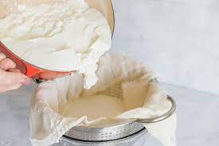

Greek Yogurt

Description
Yogurt is a product obtained from the fermentation of milk. Greek yogurt is a type of yogurt that we get when we filter out the whey from the milk, leaving us with a soft and creamy yogurt.
Ingredients
- 100 grams natural yogurt
- 1 liter skim milk
Steps
- Pour the milk in a pot and heat it to 85 ºC
- Once the temp. is reached, pour the milk and the natural yogurt onto a jar and stir briefly
- Close the jar tightly and save it somewhere to keep its temperature
- Leave it overnight, preferrably 10 to 12 hours, to let it ferment
- After time has passed, use a fabric to filter the whey out for a minimum of 3 hours. The time depends on the texture desired.
- Once filtered, the yogurt is now ready. Enjoy!
Return to Recipes